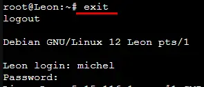

23. OPTIMISATION en cours
23.1 Reset à distance du modem GSM
1 Bug en 2 ans !!!
23.1.1 Simple programme de commande de relais USB LCUS_1
le script bash
#!/usr/bin/bash
echo "Entrer une commande : ON ou OFF "
read COMMANDE
if [ "$COMMANDE" = "ON" ] ; then cmd='\xA0\x01\x01\xA2'
fi
if [ "$COMMANDE" = "OFF" ] ; then cmd='\xA0\x01\x01\xA2';
fi
serdev="/dev/ttyUSB0"
echo 'reset modem gsm'
/bin/bash -c "echo -n -e '$cmd' > $serdev"
Retour d’info avec GPIO du RPI
{kind=link}
23.2 Assistant personnel open source Leon
https://github.com/leon-ai/leon
{kind=link}
Installation dans un conteneur LXC Proxmox
Note
conteneur LXC Debian 11 Standard ou Debian 11 Standard
disque :20 Go
disque d’échange 4096 Mo minimum
mémoire : minimum 4096 Mo
package: sudo (apt install sudo)
un utilisateur avec des droits
{kind=link}
23.2.1 Prérequis
Si l’on est encore sous ROOT:
 , ouvrir une session utilisateur
{kind=link}
Installation de Node.js et npm sous Debian 11
La version de node.js doit être =>16 et avec debian 11 c’est la version 12 qui est installée
sudo apt-get install -y ca-certificates curl gnupg
sudo mkdir -p /etc/apt/keyrings
curl -fsSL https://deb.nodesource.com/gpgkey/nodesource-repo.gpg.key | sudo gpg --dearmor -o /etc/apt/keyrings/nodesource.gpg
NODE_MAJOR=20
echo "deb [signed-by=/etc/apt/keyrings/nodesource.gpg] https://deb.nodesource.com/node_$NODE_MAJOR.x nodistro main" | sudo tee /etc/apt/sources.list.d/nodesource.list
sudo apt update
sudo apt install nodejs npm -y
{kind=link}
{kind=link}
{kind=link}
23.2.2 Installation et configuration de Leon
23.2.2.1 INSTALLATION
- Installation de Leon CLI
sudo npm install --global @leon-ai/cli
Pour une version beta : npm install –global @leon-ai/cli@beta
{kind=link}
- Installation de Leon (stable branch)
sudo leon create birth
Pour la version en developpement: leon create birth –develop
{kind=link}
{kind=link}
{kind=link}
Note
sous Debian 11 si Git n’est pas installé, l’installer
sudo apt install git-all
- Vérifiez la configuration
sudo leon check
{kind=link}
{kind=link}
23.2.2.2 CONFIGURATION
Important
PORTS des serveurs HTTP et TCP
. Sur mon installation les ports 1337 et 1342 ne fonctionne pas , déjà utilisés !! . Je les ai remplacés par les port 8089 et 8090
Pour trouver l” IP du conteneur LXC:
{kind=link}
Dans le répertoire d’installation ~/.leon , remplacer IP, Ports, Langue,…
{kind=link}
sudo nano .env
{kind=link}
23.2.2.3 LANCER Leon
Quitter le shell en root : exit
sudo leon start --port=<PORT>
{kind=link}
{kind=link}
Dans un navigateur, au clavier:
{kind=link}
{kind=link}
23.2.2.4 UPDATE Leon en mode développement
sudo leon update --develop
{kind=link}
23.2.3 Installation de STT et TTS
23.2.3.1 Installation de STT
{kind=link}
Note
Comme pour la configuration , il peut être necessaire de passer en root
npm run setup:offline-stt
{kind=link}
Dans le fichier de configuration .env:
# Enable/disable Leon's speech-to-text
LEON_STT=true
# Speech-to-text provider
LEON_STT_PROVIDER=coqui-stt
23.2.3.2 Installation de TTS
Léon utilise CMU Flite qui est un petit et rapide moteur de synthèse vocale
npm run setup:offline-tts
{kind=link}
Comme por STT , il faut modifier la configuration .env :
# Enable/disable Leon's text-to-speech
LEON_TTS=true
# Text-to-speech provider
LEON_TTS_PROVIDER=flite
hotword Léon Hotword: détection de l’activité vocale
Une fois que Léon a entendu son nom, il est prêt à écouter une requête
Installation
npm run setup:offline-hotword
L’installation de snowboy échoue !!! mais sox est installé
{kind=link}
23.2.4 Fonctionnement HORS LIGNE
Avec STT et TTS et le nœud hotword (moteur de détection de mots clés), tout tourne sur votre machine, rien ne sort pour requêter un service tiers